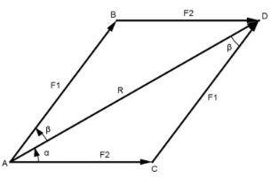

Aufgabe 216 Wie groß sind die Winkel α und β, die entstehen, wenn eine Kraft R = 235 N in die zwei Teilkräfte F1 = 160 N und F2 = 135 N zerlegt wird?

Im Dreieck ADB: Fall SSS: Cosinussatz: F22 = F12 + R2 - 2 * F1 * R * cosβ |+2*F1*R*cos β F22 + 2 * F1 * R * cos β = F12 + R2 |-F22 2 * F1 * R * cos β = F12 + R2 - F22 |:2 * F1 * R F12 + R2 - F22 cos β = ---------------- = 2 * F1 * R2 (160 N)2 + (235 N)2 - (135 N)2 = --------------------------------- = 0,8324 2 * 160 N * 235 N --> β = 33,7° Im Dreieck ACD: Fall SSW: Sinussatz: F2 F1 -------- = ------- |*sin α sin β sin α F2 * sin α ------------ = F1 |*sin β sin β F2 * sin α = F1 * sin β |:F2 F1 * sin β 160 N * sin 33,7° sin α = ------------- = -------------------- = F2 135 N 160 N * 0,5548 = ----------------- = 0,6575 135 N --> α = 41,1°